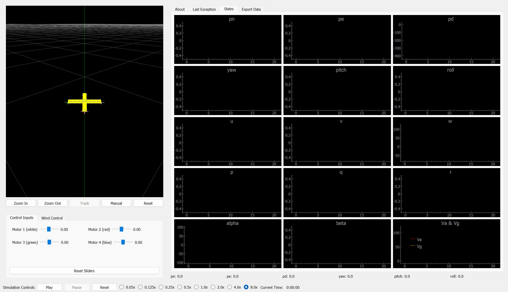

Projects
UAV Simulation for Drones
quadrotor-vtol

- Developed a custom physics-based simulation modeling the dynamics and aerodynamics of a quadrotor drone.
- Designed a modular platform for inputting and simulating various drones as needed.
Convex Optimization for Signal Denoising
Enhancing Backscatter Localization Using Convex Total Variation
- Successfully demonstrated the application of convex optimization in signal denoising.
- Achieved an 8.5% improvement in soil moisture measurement accuracy with minimal preprocessing time.
Imitation Learning in Robotic Manipulations
Grab-o-Matic 3000
Project Lab Report Github Link
- A robotic system for ball-catching tasks, employing imitation learning and inverse kinematics.
- Uses imitation learning to imitate expert-like ball-catching actions based on visual observations.
- Automatically uses inverse kinematics calculations to determine optimal joint velocities for the robotic arm to intercept projected ball trajectories smoothly.
Sensor Based Instrumental Gloves
Slug Symphony
Project Lab Report Github Link
- Gloves that emulate the saxophone, guitar, drums, piano, and trumpet.
- Flex and 9-DOF sensors integrated with UNO 32 microcontroller for accurate instrument replication.
- Uses state machines to transition between instruments, ensuring user-friendly interaction seamlessly.
Autonomous Ball Shooting Robot
Slug World Cup
Project Lab Report Github Link
- An autonomous robot capable of autonomously traversing a field an dispensing balls in a defended goal.
- Uses state machine architecture, ensuring the robot's precise navigation, goal detection, and autonomous scoring capabilities.
- Applied a Proportional-Integral-Derivative (PID) control strategy to enhance the robot's navigation precision, implementing a Proportional (P) component to minimize errors and ensure straight-line movement.
FPGA Verilog Video Game
Watch Your Step
Code sharable upon request.
- Developed the "Watch your Step" game on the BASYS3 board and VGA monitor, implementing player control, hole avoidance, and coin collection.
- Demonstrated expertise in state machine design, efficiently managing player actions, power-ups, and coin interactions.
Autonomous Driving Algorithms
F1TENTH Autonomous Racing
- Implemented Wall Following and Follow the Gap autonomous driving algorithms within the F1TENTH Simulator.